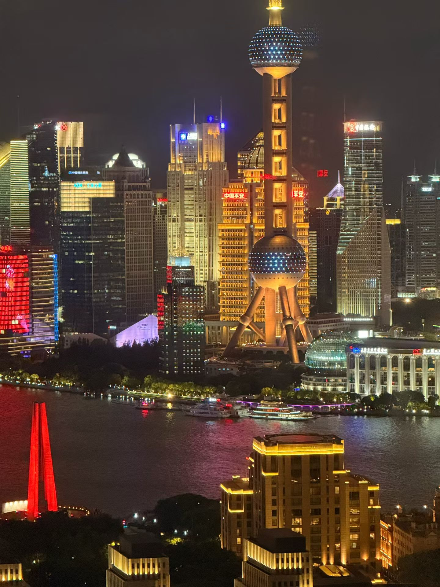
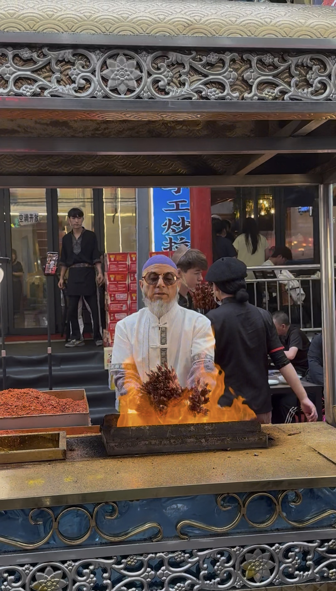
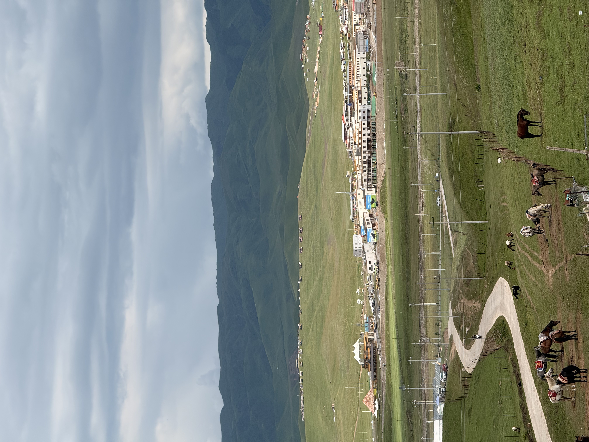
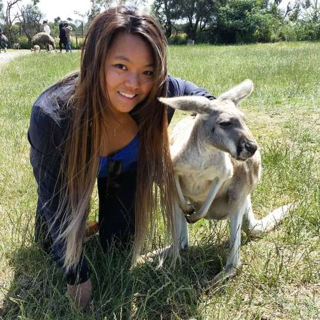
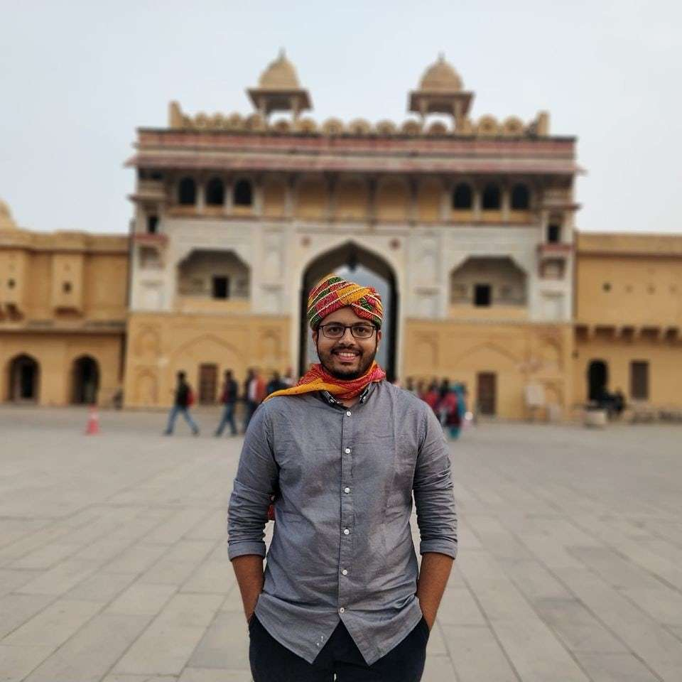

SHANGHAI · GANSU · MORE
上海 · 甘肃 · 周边
See China
beyond the checklist.
不止打卡。
First time in China?
第一次来中国？
China is actually much easier to travel than it may seem from the outside. Still, your first few hours can be a lot: payments, apps, maps, train tickets, reservations, public transport, and the language barrier. You could call all of that part of the adventure — but when your payment stops working or the train you need is suddenly sold out, the charm wears off pretty quickly.
中国其实比想象中容易旅行，但第一次落地时，支付、App、地图、火车票、预约、公共交通和语言障碍， 还是很容易让人抓狂。你当然可以说这些小插曲也是旅行体验的一部分。 但真出问题的时候，实在影响心情。
Pick your China.
选择你的中国。
Shanghai
上海
Skyline, lilongs, ferries, markets, cafés, metro lines and streets where something is always changing. We can do the classics， or simply spend a day reading the city.
天际线、里弄、轮渡、市集、咖啡馆、地铁，快节奏的城市。 可以特种兵式打卡著名景点，也可以慢慢感受老城区每一条街道。
Gansu
甘肃
This is home — a place I have left and returned to more times than I can count. What I know of Gansu comes not only from books, but from years of moving through its cities, roads, mountains and everyday life.
这是我的家，也是我无数次离开、又无数次回去的地方。 我对甘肃的了解不只来自书本，也来自这些年真正走过的城市、道路、山河与日常。
More
甘肃周边
Head west from Lanzhou through the Hexi Corridor and across the Gobi, towards the heart of Central Asia — landscapes so vast they can feel almost unreal. Turn south into the Tibetan plateau instead, and the journey becomes quieter, higher, and a little more spiritual.
从兰州向西，穿过河西走廊与戈壁滩，走向中亚腹地， 是近乎不似人间的广袤壮美；向南进入高原藏地， 山川、寺院与漫长的道路，一场人文与灵性之旅。



Travel your way.
想怎么走就怎么走。
Transit Highlights
过境精华游
Short on time? A compact route through the essentials, planned around your arrival, departure and pace.
时间有限，只看最值得看的。根据抵离时间与节奏，安排紧凑但不慌乱的精华路线。
Local & Slow
公交深度游
Metro, buses and plenty of walking — a lower-cost way to explore neighbourhoods, markets, food and everyday life.
地铁、公交和步行，用更低的预算走进街区、市集、食物与城市日常。
Fully Tailored
完全定制
You can start planning with me months before your trip, or keep me on hand for remote support along the way — with quick replies whenever you need help.
你可以在出发前半年就开始咨询！如果你想solo trip，我也可以全程远程在线提供支持。秒回！
From previous travellers
“Petra was an awesome guide. She has a wealth of knowledge on history and the older buildings. She was a great help before arriving in Shanghai and had prompt responses to all queries before and after the meeting.”
“Petra 是一位非常棒的向导，对历史和老建筑了解很多。 在我抵达上海之前她就帮了很大的忙， 无论见面前后，对各种问题的回复都非常及时。”

“Apart from taking me around the places in Shanghai, she advised and suggested preliminary travel requirements on arrival to China... I preferred to take local transport like metro & bus and she conveniently helped in hopping on these. I would definitely recommend a day outing with Petra.”
“除了带我游览上海，她还提前告诉了我抵达中国时需要准备的旅行事项。 我希望尽量乘坐地铁和公交，她也很好地帮我解决了这些出行问题。 如果你来上海，我非常推荐和 Petra 一起出去走一天。”

“We had great time together with Petra — she showed us Chinese garden, local market and explained a lot about culture, traditions, people… She is very positive lady and we had great time together!”
“我们和 Petra 度过了很愉快的一天——她带我们去了中式园林和本地市集， 也讲了很多关于文化、传统和当地人的事情。 和她一起旅行非常开心！”
Contact & Book
联系
Back soon.
很快回来。
Tours are currently on pause as I'm abroad.
不知道什么时候重新开始啊。